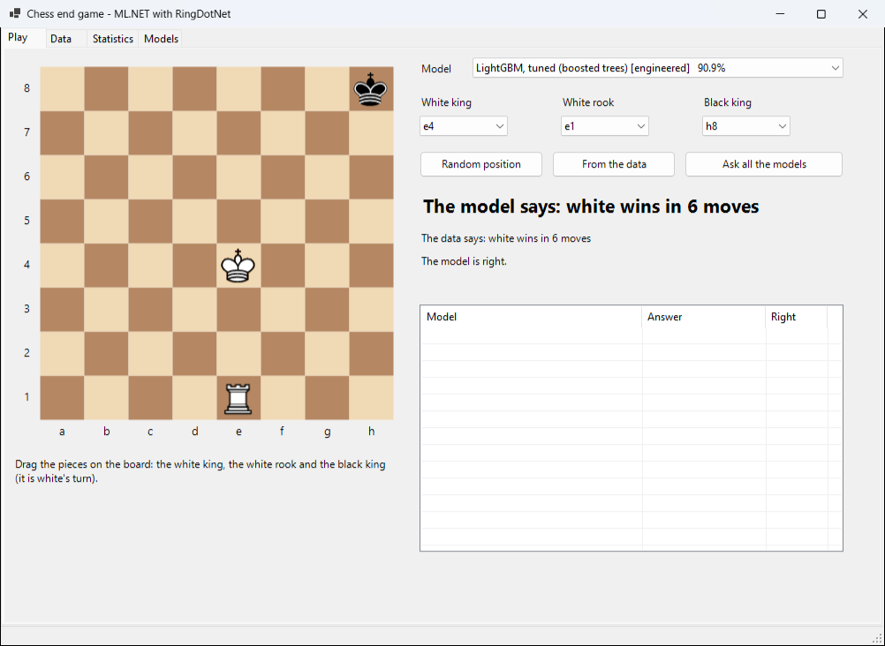

Machine learning: the chess end game
Train ML.NET models on a white king and a white rook against a black king, test them on positions they have not seen, save them, and use them to predict the result of a game.
A white king and a white rook against a black king: is the game a draw, or in how many moves does white win? The data set has 28,056 positions with their results (the "chess end game" data of the UCI repository). The example samples/UsingDotNet/tests/packages/ChessEndgame trains fifteen combinations of algorithm and features on 70 percent of the positions, tests them on the other 30 percent, saves every model, and uses a saved model to predict the result of a position. It has three console programs and a window (ChessEndgame.ring, below) where you drag the pieces and the models answer. All of it is Ring that uses ML.NET through RingDotNet: there is no C# in it.
The result of a position is one of eighteen words: draw, or zero to sixteen, the number of moves that white needs to win with the best play.
Run it#
cd samples/UsingDotNet/tests/packages/ChessEndgame
ring train.ring # split 70 / 30, train, test, save the models (about a minute)
ring evaluate.ring # load the saved models and test them again
ring predict.ring a1 b3 c2 # the result of a position: white king a1, white rook b3, black king c2
ring ChessEndgame.ring # the window: the board, the data, the statistics and the modelsThe first run downloads ML.NET (the packages of ChessEndgame.csproj) from nuget.org and makes the Ring classes of its DLLs; the next runs only load them. ring train.ring --quick tries three algorithms on a seventh of the data.
| Program | What it does |
|---|---|
train.ring | splits the data, trains the algorithms, tests them, saves each model in models, ranks them |
evaluate.ring | loads the saved models and tests them: the accuracy of each, then the best one result by result |
predict.ring | loads a saved model (the best one, or --model=tree_engineered) and gives the result of the positions that you name |
ChessEndgame.ring | the window: see below |
chesslib.ring | getting ML.NET, the split, the features, the algorithms, the training and the answers, used by the four programs |
70 percent to train, 30 percent to test#
A model must be tested on positions that it has not learned from, or its accuracy tells nothing: a model could remember every position it saw. chessSplit() shuffles the positions and writes data/train.csv (19,639 positions) and data/test.csv (8,417 positions). The shuffle uses a generator of numbers that is the same on every computer (seed * 16807 mod 2147483647), so the split is the same each time, and no position is in both files.
nSeed = 42
for nPlace = nRows to 2 step -1 # a shuffle (Fisher and Yates)
nSeed = (nSeed * 16807) % 2147483647
nOther = 1 + floor(nSeed / 2147483647 * nPlace)
cSwap = aRows[nPlace]
aRows[nPlace] = aRows[nOther]
aRows[nOther] = cSwap
next
nTrain = floor(nRows * 0.7) # the first 70 percent train, the rest testOne way for each position#
The board can be turned and mirrored (eight ways) without changing the result of a game, and the data keeps one way for each position: the white king is always in the lower left triangle (a1 b1 c1 d1 b2 c2 d2 c3 d3 d4). A model that only learns from those positions has never seen a king on e4. chessCanonical() turns any position to the way of the data, and chessFeatures() calls it first, so the files that the example writes, and a position that you name, are in the same way. Without it the answers for positions with the king elsewhere were wrong in a way that no test of the data could show, because the test positions are canonical as well. (The position e4 e1 h8 and its half turn d5 d8 a1 get the same answer, and the test of the example checks it.)
The features#
The data gives the six squares: the file and the rank of each piece. chessFeatures() turns a position into numbers, and the example tries three sets of them:
| Set | What the algorithm reads |
|---|---|
squares | the six numbers: the files a to h as 1 to 8, and the ranks |
onehot | each of the six numbers as a one-hot vector (a 0 or a 1 for each of the 8 values: 48 numbers). A linear model cannot tell much from the number of a rank, but it can learn a weight for each square. |
engineered | the six numbers and what a player sees at a glance: the distance between the kings, how near the black king is to the edge, the distance of the rook from each king, whether the white king guards the rook, whether the black king can take it, and whether the rook is on the file or the rank of the black king |
The algorithms#
ML.NET has algorithms for many classes (MulticlassClassification.Trainers), and binary algorithms that OneVersusAll turns into algorithms for many classes: it trains one model for each result, and the model with the highest score answers. Each trainer is one call, and the rest of the pipeline is the same. The methods of ML.NET have many overloads with optional arguments, so the calls give their arguments by name ([ :labelColumnName = "Label", ... ]): the name finds the overload. Append joins the steps: it is a generic extension method of ML.NET, and the bridge works out its type argument from the step that you give.
oPipeline = oMl.Transforms.Conversion.MapValueToKey([ :outputColumnName = "Label", :inputColumnName = "GameResult" ]) # the result as a key
oPipeline = oPipeline.Append(chessFeaturePipeline(oMl,"engineered")) # the features
oPipeline = oPipeline.Append(oMl.MulticlassClassification.Trainers.LightGbm([ :labelColumnName = "Label", :featureColumnName = "Features" ]))
oPipeline = oPipeline.Append(oMl.Transforms.Conversion.MapKeyToValue([ :outputColumnName = "PredictedResult", :inputColumnName = "PredictedLabel" ])) # the answer as the word
oModel = oPipeline.Fit(oTrain) # learn from the training positions
aPredicted = chessColumn(oModel.Transform(oTest),"System.String","PredictedResult") # answer for the test positionsSome algorithms have a "tuned" version with settings that are not the defaults: trees with more leaves that may hold two positions, and more of them. LightGBM takes its options as an object (the class LightGbmMulticlassTrainer+Options of .NET is LightGbmMulticlassTrainerOptions in Ring), whose properties are set like those of any object:
oOptions = new LightGbmMulticlassTrainerOptions()
oOptions.NumberOfLeaves = 127
oOptions.NumberOfIterations = 300
oOptions.LearningRate = 0.1
oOptions.MinimumExampleCountPerLeaf = 2
oTrainer = oMl.MulticlassClassification.Trainers.LightGbm(oOptions)These are the results of ring train.ring (the accuracy is the share of the 8,417 test positions whose result is exactly right; "within 1" also accepts a win that is one move off):
| Algorithm | Features | Accuracy | Within 1 |
|---|---|---|---|
| LightGBM, tuned (boosted trees) | engineered | 90.9% | 97.9% |
| Boosted trees: FastTree, tuned (one versus all) | engineered | 90.7% | 97.5% |
| LightGBM (boosted trees) | engineered | 82.1% | 95.7% |
| LightGBM (boosted trees) | squares | 81.8% | 96.0% |
| Boosted trees: FastTree (one versus all) | engineered | 81.5% | 95.1% |
| Random forest, tuned (one versus all) | engineered | 77.2% | 92.2% |
| Decision tree (one versus all) | engineered | 61.0% | 82.2% |
| Random forest (one versus all) | engineered | 58.1% | 83.6% |
| Decision tree (one versus all) | squares | 45.3% | 69.6% |
| Logistic regression (L-BFGS) | onehot | 38.6% | 67.1% |
| Logistic regression (SDCA) | onehot | 35.9% | 62.7% |
| Linear model (SDCA, no calibration) | onehot | 35.2% | 61.1% |
| Averaged perceptron (one versus all) | onehot | 34.9% | 63.5% |
| Naive Bayes | onehot | 32.8% | 62.0% |
| Linear SVM (one versus all) | onehot | 27.2% | 58.1% |
What the numbers show:
- Trees beat lines. The result of a position depends on how the pieces are placed against each other, not on a weighted sum of squares: logistic regression stays below 40 percent, boosted trees reach 82 percent with their defaults.
- Settings matter as much as the algorithm. Boosted trees with 127 leaves and 200 to 300 rounds reach 91 percent, nine points more than the defaults; a forest of trees with 200 leaves goes from 58 to 77 percent.
- Boosting beats one tree. A single decision tree gets 61 percent with the engineered features; trees that correct each other's mistakes get 82 percent, or 91 with the tuned ones.
- The features matter. The same single tree goes from 45.3 to 61.0 percent when it is given the distances.
- Almost right is common. The best model is wrong by one move for another 7 percent of the positions: 97.9 percent are right or one move off.
evaluate.ringshows it result by result: every draw of the test positions is found, and no win is taken for a draw. - The numbers vary a little. Trainers that use several threads (LightGBM, SDCA) do not give exactly the same numbers on every run.
Save the models, and use them#
Each model is saved with the schema of the data that trained it. A model file has the whole pipeline in it: the features, the trainer, and the answer as a word.
oMl.Model.Save(oModel,oTrain.Schema,currentdir() + "/models/lightgbm_engineered.zip")evaluate.ring and predict.ring start from the files. Load answers a list: the model, and the schema that was saved with it.
aLoaded = oMl.Model.callMethod("Load",[currentdir() + "/models/lightgbm_engineered.zip"])
aPredicted = chessColumn(aLoaded[1].Transform(chessLoad(oMl,"data/positions.csv")),"System.String","PredictedResult")For a position that you name, chessPredictOne() writes a file with one line for it (the features that chessFeatures() makes, and a word in the column of the result, which the model ignores), and the model answers:
> ring predict.ring e4 e1 h8
the model: LightGBM, tuned (boosted trees) [engineered], the best of those that train.ring made
white king e4, white rook e1, black king h8:
8 . . . . . . . k
7 . . . . . . . .
6 . . . . . . . .
5 . . . . . . . .
4 . . . . K . . .
3 . . . . . . . .
2 . . . . . . . .
1 . . . . R . . .
a b c d e f g h
the model says: white wins in 6 movesThe window#
ChessEndgame.ring is a window for the same models, a port of the RingQt application ring/applications/chessendgame (which asked models of Azure over the internet) that uses the models that train.ring saved:

| Tab | What it does |
|---|---|
| Play | Drag the pieces on the board (the images of the RingQt application, drawn on a UiCanvas with DrawImage), or choose the squares in the boxes. The model that you choose answers, the data says what the real result is, and the window tells whether the model is right. Random position and From the data set the pieces; Ask all the models lists the answer of each model for the position. |
| Data | The 28,056 positions in pages of 500 rows, with a filter for the result. A double click shows the position on the board. |
| Statistics | The number and the share of the positions of each result, and a chart of bars; the row that you select in the table has the red bar. |
| Models | The saved models with their accuracy. Train all the algorithms does what train.ring does (the window shows the progress), Quick training the three algorithms of the quick run, and Test the selected model tests it on the 30 percent of positions: the accuracy, and how many draws it finds. |
The window and the three programs share chesslib.ring. chessTrainAll() trains, tests and saves every algorithm, and calls a function of the program after each one (train.ring prints a line, the window moves a progress bar); chessModels() reads models/index.txt; chessPredictOne() answers for a position. Each model is loaded once, when the first position needs it. The window tests itself (ring ChessEndgame.ring --selftest): it drags pieces with the mouse functions, filters and pages the data, asks the models, and trains if there are no models.
The test of the example#
samples/UsingDotNet/tests/packages/pkgtest_mlnet_chess.ring runs the three programs the way a user does: train.ring --quick, evaluate.ring and predict.ring. It checks the 70 / 30 split (the number of positions in each file, and that no position is in both), that the models are saved and ranked, that the saved model gives the accuracy that the training measured, and the answers for positions, for a position and the same position turned half a turn (the answer is the same), for another model, and for positions that are not positions (two pieces on a square, kings that touch). The window has its own checks.